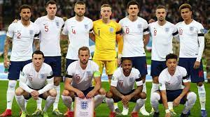

Ranking FIFA : 5° (agosto 2022).
¿Cómo se clasificó al Mundial? Ganó el Grupo I de las Eliminatorias Europeas.
Rendimiento en 2021 (G-E-P): 15-3-1 (52 GF, 8 GC, +44)
Rendimiento en 2022 : 2-2-2 (GF 6, GC 7, -1).
Jordan Pickford
Kyle Walker
John Stones
Harry Maguire
Luke Shaw
Kalvin Phillips
Declan Rice
Mason Mount
Phil Foden
Harry Kane
Raheem Sterling.
Nacionalidad: inglés.
Edad: 52 años.
Contratado: 27 de septiembre de 2016.
Récord en el cargo (G-E-P): 46-16-12
Títulos en el cargo: Ninguno.
Victoria más notable: 2-0 sobre Alemania, octavos de final de la Eurocopa 2020 (disputada en 2021).
1930 Uruguay *
1934 Italia *
1938 Francia *
1950 Brasil 8°
1954 Suiza 7°
1958 Suecia 11°
1962 Chile 8°
1966 Inglaterra 1°
1970 México 8°
1974 Alemania -
1978 Argentina -
1982 España 6°
1986 México 8°
1990 Italia 4°
1994 Estados Unidos -
1998 Francia 9°
2002 Corea y Japón 6°
2006 Alemania 7°
2010 Sudáfrica 13°
2014 Brasil 26°
2018 Rusia 4°
